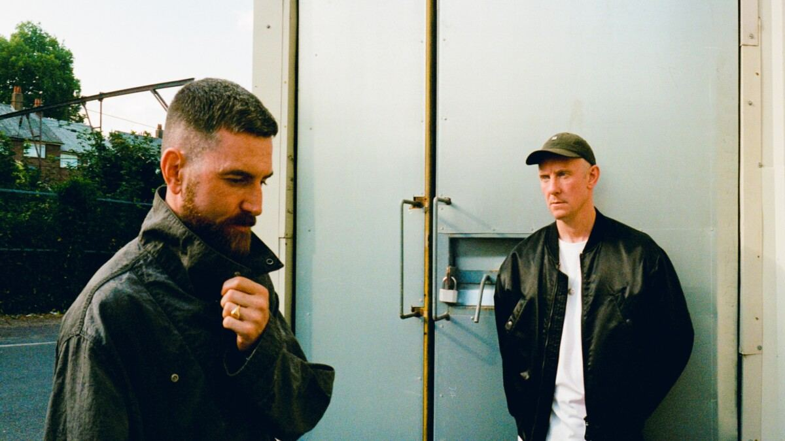

Festivals · Music
Creamfields 2027
- Dates
- –
- Location
- Daresbury, United Kingdom
- Format
- In-person
- Category
- Music
- Industry
- Music
- Organiser
- Creamfields / Live Nation
- Official website
- https://www.creamfields.com/
About
Topics: electronic, dance.
Sources
- Official — https://www.creamfields.com/